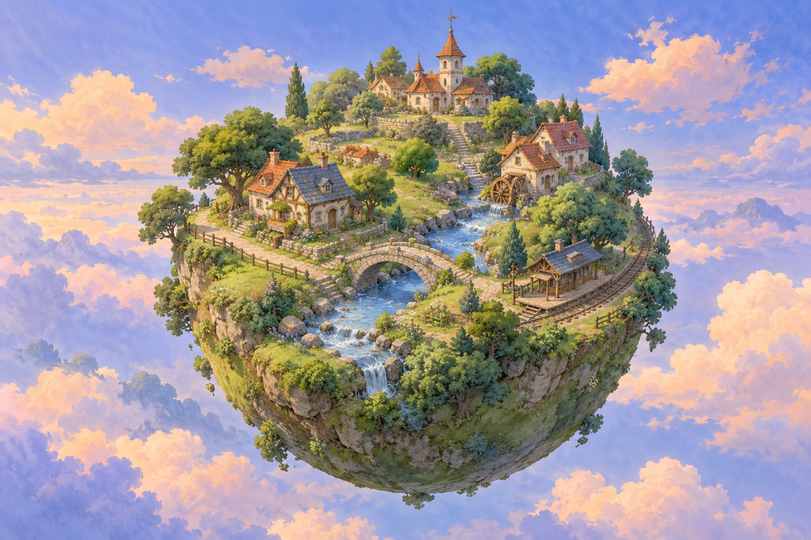
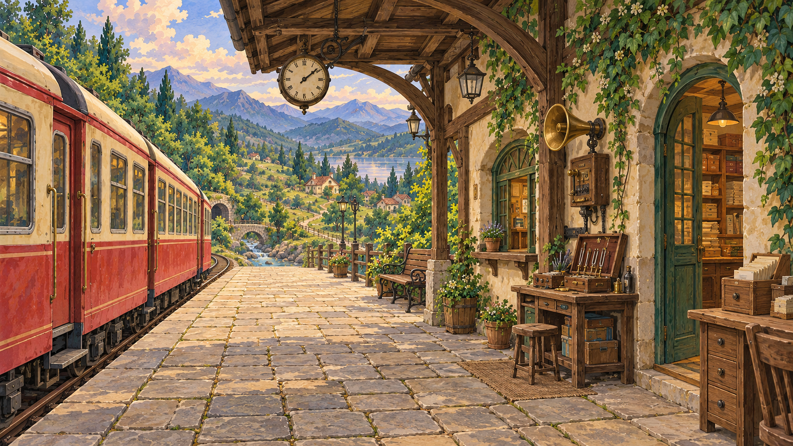

音樂盒工坊第二章 · 聲音失調音樂盒 →
A LITTLE WORLD, WAITING FOR YOU
有一座小鎮，
正在等待你的聲音。
循着河流與燈光，開啟你的修復旅程。
圖片未能載入，請重新整理。直接進入課堂 →

音樂盒工坊第二章 · 聲音失調音樂盒 →
A LITTLE WORLD, WAITING FOR YOU
循着河流與燈光，開啟你的修復旅程。
GAPSK星球的聲音突然亂了！
快用你的標準普通話，讓小鎮恢復生機吧！